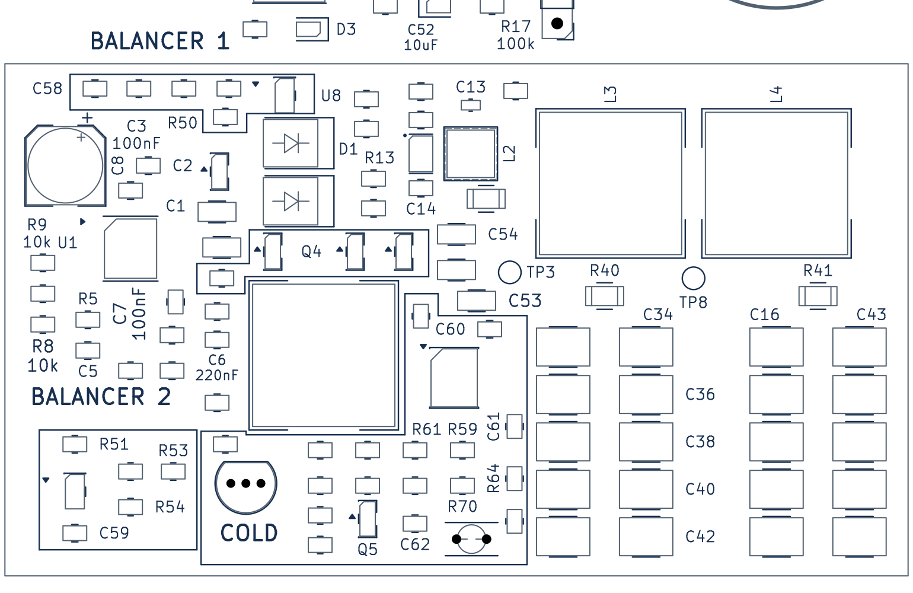

Mesh Repeater ver 1.0 — S4.16
Designed by @Alksndritm · 11 октября 2026 · 90×100 мм · два слоя.
Все семь пунктов независимого аудита исправлены. Актуальная плата опубликована в рабочем проекте после DRC и независимой повторной проверки.
Актуальная плата KiCadПроект KiCadСхема PDFВарианты сборки
Измеримые изменения
| Параметр | S4.15 | S4.16 |
|---|
| Датчик TSENSE, дорожки (мм) | 34.346 | 22.474 |
| Датчик TSENSE, переходные отверстия (шт.) | 8 | 0 |
| Выход WARM, дорожки (мм) | 34.25 | 31.071 |
| Выход WARM, переходные отверстия (шт.) | 8 | 2 |
| Порог VTH, дорожки (мм) | 35.832 | 18.533 |
| Порог VTH, переходные отверстия (шт.) | 2 | 0 |
| Опорное напряжение VREF, дорожки (мм) | 21.814 | 32.914 |
| Опорное напряжение VREF, переходные отверстия (шт.) | 2 | 3 |
| Управление затворами, дорожки (мм) | 37.059 | 40.154 |
| Управление затворами, переходные отверстия (шт.) | 2 | 4 |
| Узел SW_CHG, дорожки (мм) | 15.669 | 13.219 |
| Узел SW_CHG, переходные отверстия (шт.) | 3 | 0 |
| C12 → VIN, путь между центрами площадок (мм) | 4.449 | 1.933 |
| VOUT → C14, путь между центрами площадок (мм) | 3.049 | 1.983 |
| Перекрытие проекции CSP и SW (мм) | 5.4 | 0.0 |
| Kelvin CSP: U1.13 → R56.1 (мм) | 24.915 | 5.901 |
| Kelvin BAT: U1.14 → R1.2 (мм) | 4.874 | 4.214 |
| Силовая ветвь R56 → R1 (мм) | 16.646 | 2.828 |
| Силовая ветвь L1 → R56 (мм) | 19.014 | 37.934 |
| D2 → L1, путь между центрами площадок (мм) | 8.319 | 8.319 |
| Все управляющие сети температурной опции, дорожки (мм) | 201.925 | 174.57 |
| Все управляющие сети температурной опции, переходные отверстия (шт.) | 22 | 13 |
| Силовой тёплый режим через Q4, только дорожки (мм) | 37.385 | 34.711 |
| Силовой тёплый режим через Q6, только дорожки (мм) | 37.385 | 34.255 |
| Силовой тёплый режим через Q7, только дорожки (мм) | 37.385 | 34.255 |
| Перекрытие проекций gate и SW, включая площадки (мм²) | 0.16 | 0.16 |
Длины сравниваются по одинаковой методике. Для C12 использован фактический путь C12.1→U2.10: прежние 5,631 мм в аудите включали две соседние ветви C52; корректное исходное значение — 4,449 мм. Суммарная длина меди сети и путь между двумя площадками указаны отдельно.
A1. Kelvin-цепь CSP вынесена из переключаемой области
CSP сокращена с 24,915 до 5,901 мм, полностью проходит по F.Cu без переходных отверстий. Наложение на проекцию SW устранено. Второй Kelvin-вход BAT (U1.14→R1.2) сохранён; силовая медь не подменяет точку измерения.
A2. R56 перенесён рядом с основным шунтом R1
Соединение R56→R1 сокращено с 16,646 до 2,828 мм. Более длинная холодная силовая ветвь L1→R56 (19,014→37,934 мм, ширина не менее 0,8 мм) работает при ограниченном токе около 96 мА. Тёплые пути через Q4/Q6/Q7 стали короче. Номиналы и точки Kelvin-отбора сохранены.
A3. D2→L1 возвращён на верхний слой
В сети SW_CHG удалены три перехода; переключаемая медь проходит по F.Cu. Суммарная длина ветвей сети уменьшена с 15,669 до 13,219 мм. Путь между центрами D2 и L1 остался 8,319 мм. Основной коммутирующий контур C1/Q1/D1/D2 не менялся.
A4. Термоконтроль собран компактными рядами
Два ряда резисторов имеют одинаковый шаг 4 мм. TSENSE: 34,346→22,474 мм, переходы 8→0; VTH: 35,832→18,533 мм, переходы 2→0; WARM: 34,250→31,071 мм, переходы 8→2. Стало меньше длинных высокоомных цепей. Компромиссы: стабилизированная VREF выросла с 21,814 до 32,914 мм и получила ещё один переход; небольшой участок VREF пересекается с редко переключаемой цепью затвора по проекции. Геометрия не подтверждает измеренный уровень помех.
A5. Входная и выходная керамика приближены к TPS63802
Реальный путь C12.1→U2.10 сокращён с 4,449 до 1,933 мм, C14.1→U2.6 — с 3,049 до 1,983 мм. Силовые LX-петли и участок LC сохранены. Старый показатель C12 5,631 мм ошибочно включал две соседние ветви C52; сравнение выполнено по одному и тому же пути.
A6. Маркировка переделана по расположению компонентов
Все 167 деталей имеют ориентированную по своей оси подпись. Снизу локальные подписи центрированы точно под компонентами; увеличенные группы содержат не менее двух деталей и сохраняют взаимные позиции и ориентации при едином масштабе и переносе. Группы отмечены рамкой и масштабом, прежние таблицы и отдельные произвольные сноски удалены. Обе области балансира и группы COLD обведены на лицевой стороне; BALANCER 1, BALANCER 2 и COLD выделены жирной надписью 1,3 мм / штрих 0,20 мм. Маркеры pin1 U8/U9 уточнены рядом с pad1, библиотека синхронизирована, контактные площадки и корпуса сохранены.
A7. Термистор подписан как NTC
TH1 CELL NTC заменено на TH1 NTC. На плате он измеряет температуру под крышкой. Для измерения температуры ячейки используется один выносной NTC на тех же контактах; оба одновременно не устанавливаются.
Маркировка деталей
Все подписи ориентированы вдоль своих компонентов. Локальные подписи снизу центрированы точно под деталями. Для тесных мест увеличенные группы сохраняют взаимные позиции и ориентацию: используется единый масштаб и перенос всей группы. Прежние линейные таблицы удалены.
Обе области LTO-балансира и группы COLD обведены на лицевой стороне. Надписи BALANCER 1, BALANCER 2 и COLD увеличены и выделены более толстой линией. Распиновки разъёмов и обозначения вариантов Na/LTO сохранены.
Область экрана

Виды платы
Проверки и сохранённые требования
DRC всех уровней и всех дорожек: нет нарушений, несоединённых цепей, расхождений со схемой и игнорируемых проверок. ERC: нет ошибок; одно прежнее предупреждение общей точки FB. Проверены связность земли и рамки экрана, Kelvin-отбор, GPIO FakeTec, ветви питания MCU/модема, LC-фильтр, отбор BAT_ADC и балансир J12, RF keepout, углы трасс и шелкография.
Номиналы, корпуса, схемные соединения и варианты монтажа Na-ion с термоконтролем / Na-ion без него / LTO сохранены. В схеме обновлена только ревизия. TH1 на плате измеряет температуру под экраном; для контроля ячейки используется один выносной NTC на тех же площадках.
Геометрические проверки не подтверждают физическую устойчивость зарядки, реальные температурные пороги аккумулятора или EMC. Эти параметры проверяются измерениями на образце. Пакет заказа плат остаётся отложен.
Итоговые проверки · Независимый повторный аудит · Измерения улучшений · Текст отчёта
SHA256 платы:
742ae27bb1d13893f6dc368e5c67f5c41b35a3e6765331fc7e9871297d23dec6